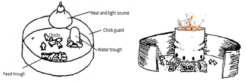
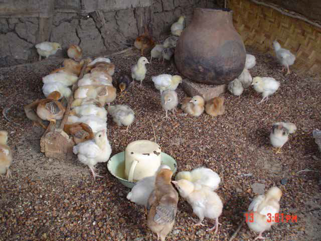

ກິດຈະກຳຕໍ່ໄປນີ້ຄວນຖືກດຳເນີນການບາງອາທິດກ່ອນທີ່ລູກໄກ່ຈະມາຮອດ:
• ສ້າງຕູ້ຟັກ (ເບິ່ງບົດທີ 2) ຫຼື ດຳເນີນການສ້ອມແປງທີ່ຈຳເປັນໃນອາຄານທີ່ມີຢູ່. ຮັບປະກັນວ່າອາຄານບໍ່ມີຮູຮົ່ວ - ນ້ຳຝົນບໍ່ເຂົ້າທາງປ່ອງຢ້ຽມ -, ອາຄານບໍ່ມີລົມພັດຜ່ານ (ລົມເຢັນ) ແລະ ໜູຫຼື ສັດລ້ຽງລູກ. ອາດຈະຈຳເປັນຕ້ອງປິດປ່ອງຢ້ຽມບາງອັນດ້ວຍເຟືອງປາປີຣັສ, ກ່ອງກາດຕົງ ຫຼື ຖົງເກົ່າເພື່ອຫຼຸດລົມພັດຜ່ານແລະ ຄວບຄຸມການຖ່າຍເທ. ບໍ່ຄວນໃຊ້ວັດສະດຸໂພລີທີນເພື່ອປິດ, ເພາະມັນບໍ່ອະນຸຍາດໃຫ້ອາກາດໄຫຼຜ່ານ.
• ເຟືອງກາເຟຫຼື ເຟືອງເຂົ້າ ຫຼື ວັດສະດຸປູພື້ນທີ່ດີອື່ນໆຖືກເອົາມາປູພື້ນເພື່ອສ້າງຊັ້ນປູພື້ນທີ່ເລິກ (3-4 ນິ້ວ).
• ວັດສະດຸປູພື້ນບໍ່ຄວນຊຸ່ມແລະ ມີເຊື້ອລາ ແລະ ບໍ່ຄວນມີຝຸ່ນ.
• ໃນໄລຍະອາທິດທຳອິດ, ເຟືອງຖືກປົກດ້ວຍເຈ້ຍ/ຖົງອາຫານ. ນີ້ຮັບປະກັນວ່າລູກໄກ່ທີ່ຍັງບໍ່ໄດ້ພັດທະນາຄວາມຮູ້ສຶກກິ່ນຈະບໍ່ສັບສົນວັດສະດຸປູພື້ນກັບອາຫານແລະ ກິນມັນ, ເຮັດໃຫ້ເກີດການອຸດຕັນ. ເຈ້ຍຂ່າວຍັງຫຼຸດຄວາມເປັນໄປໄດ້ຂອງການຕິດເຊື້ອທີ່ສາຍບື້ມໃນວັນທຳອິດຂອງຊີວິດ. ບໍ່ຄວນໃຊ້ເຈ້ຍໂພລີທີນເພື່ອປົກວັດສະດຸປູພື້ນເພາະມັນບໍ່ດູດຊຶມນ້ຳຈາກຂີ້ໄກ່ຫຼື ນ້ຳທີ່ຫຼັ່ງຈາກຮ່ອງນ້ຳ.
• ເພື່ອສອນລູກໄກ່ໃຫ້ກິນອາຫານ, ອາຫານລູກໄກ່ສາມວັນທຳອິດຖືກວາງເປັນກອງເທິງເຈ້ຍ.
• ສາມວັນຕໍ່ໄປ, ອາຫານຖືກໃຫ້ໃນກ່ອງໄຂ່ໃໝ່ທີ່ຍັງບໍ່ໄດ້ໃຊ້
• ຫຼັງຈາກນັ້ນ, ຮ່ອງອາຫານທີ່ເໝາະສົມກັບຂະໜາດຂອງໄກ່ຖືກໃຫ້
• ລູກໄກ່ຕ້ອງການອຸນຫະພູມສູງກວ່າ. ເມື່ອພວກມັນຖືກຟັກຕາມທຳມະຊາດ, ແມ່ໄກ່ຮູ້ວິທີການປັບອຸນຫະພູມຢ່າງຖືກຕ້ອງ. ໃນກໍລະນີຂອງການຟັກແບບມີໂຄງການ, ຄວນມີແຫຼ່ງຄວາມຮ້ອນສຳລັບໄກ່ໃນອາທິດທຳອິດຂອງຊີວິດ.
• ຕູ້ຟັກຖືກເຮັດຄວາມຮ້ອນຢ່າງໜ້ອຍ 12-24 ຊົ່ວໂມງ (3 ຊົ່ວໂມງໃນກໍລະນີສຸກເສີນ) ກ່ອນທີ່ລູກໄກ່ຈະຖືກເອົາເຂົ້າໄປ.
• ແຫຼ່ງຄວາມຮ້ອນທີ່ລາຄາຖືກສຳລັບລູກໄກ່ແມ່ນຖ່ານຫຼື ຖ່ານອັດ.
• ເພື່ອສ້າງຖ່ານອັດ, ຜົງຖ່ານ (ຂີ້ເຫຍື່ອ) ຖືກປະສົມກັບດິນທີ່ມີຄວາມຕິດກັນແລະ ປັ້ນເປັນຮູບກົມຈາກນັ້ນປ່ອຍໃຫ້ແຫ້ງແລະ ແຂງ. ຖ່ານອັດຖືກເຜົາແລະ ວາງໃນຫມໍ້ດິນທີ່ວາງເທິງຫີນບາງກ້ອນໃນພື້ນທີ່ຟັກ.
• ເມື່ອລູກໄກ່ຍັງນ້ອຍ, ພວກມັນຕ້ອງຖືກຮັກສາໄວ້ຮ່ວມກັນແລະ ໃກ້ກັບແຫຼ່ງຄວາມຮ້ອນຜ່ານການປ້ອງກັນລູກໄກ່.
• ການປ້ອງກັນລູກໄກ່ແມ່ນເປັນວົງຂອງໄຟເບີບອດ, ກ່ອງກາດຕົງ, ເຫຼັກພລາສຕິກ, ເຟືອງປາປີຣັສ ຫຼື ຕາຫຼຸງລວດ, ສາມາດສ້າງລອບແຫຼ່ງຄວາມຮ້ອນຖ້າຕູ້ຟັກມີຂະໜາດໃຫຍ່. ມັນຈຳກັດການເຄື່ອນໄຫວຂອງລູກໄກ່ອອກຈາກແຫຼ່ງຄວາມຮ້ອນ. ການປ້ອງກັນລູກໄກ່ມີເສັ້ນຜ່າສູນກາງ 3 ແມັດ ແລະ ສູງຢ່າງໜ້ອຍ 2 ຟຸດສຳລັບທຸກ 200 ລູກໄກ່
ເມື່ອອຸນຫະພູມສູງ, ລູກໄກ່ຈະຫຼົບຫ່າງຈາກແຫຼ່ງຄວາມຮ້ອນແລະ ຫາຍໃຈໄວດ້ວຍປາກເປີດ. ເມື່ອອຸນຫະພູມຕ່ຳ, ພວກມັນຈະມົວກັນລອບແຫຼ່ງຄວາມຮ້ອນ. ລູກໄກ່ກະຈາຍຕົວຢ່າງສະໝ່ຳສະເໝີໃນອາຄານເມື່ອອຸນຫະພູມປົກກະຕິຫຼື ສະໝ່ຳສະເໝີ. ຄວາມຕ້ອງການອຸນຫະພູມຂອງລູກໄກ່ຫຼຸດລົງຢ່າງວ່ອງໄວໃນໄລຍະ 4-6 ອາທິດຂອງຊີວິດ.
 ການປ້ອງກັນລູກໄກ່ຫຼື ວົງທີ່ສ້າງຈາກກ່ອງກາດຕົງ. ນີ້ຊ່ວຍຮັກສາລູກໄກ່ບໍ່ໃຫ້ຫຼົບຫ່າງ  ການຕິດຕັ້ງຕູ້ຟັກທີ່ແທ້ຈິງສຳລັບໄກ່ທ້ອງຖິ່ນ. ການອອກແບບຕູ້ຟັກທ້ອງຖິ່ນທີ່ມີເຕົາເຮັດດ້ວຍຫມໍ້ດິນແລະ ລູກໄກ່ກະຈາຍຕົວຢ່າງສຸ່ມສະແດງເຖິງຄວາມຮ້ອນທີ່ເໝາະສົມ